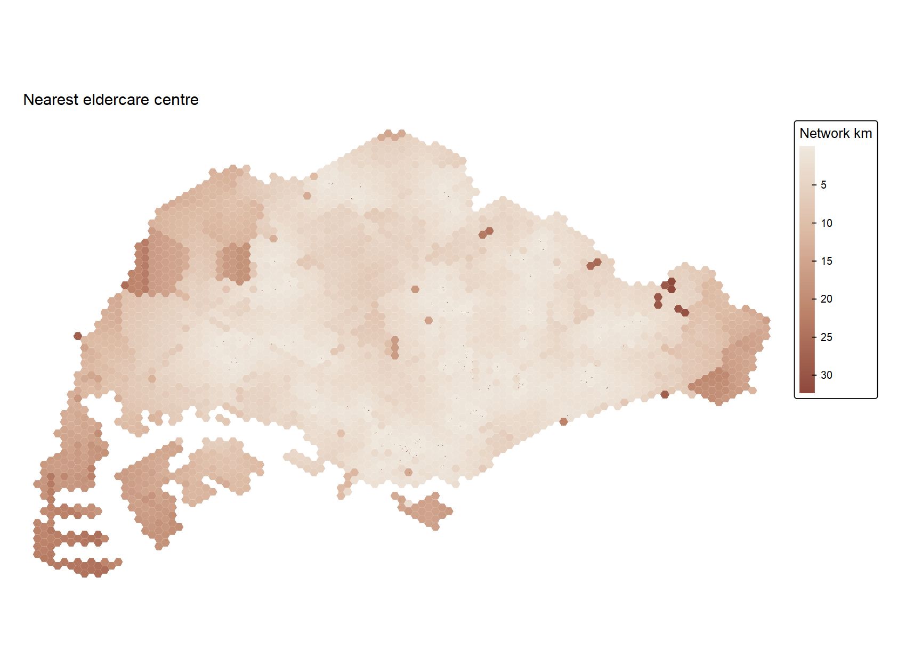
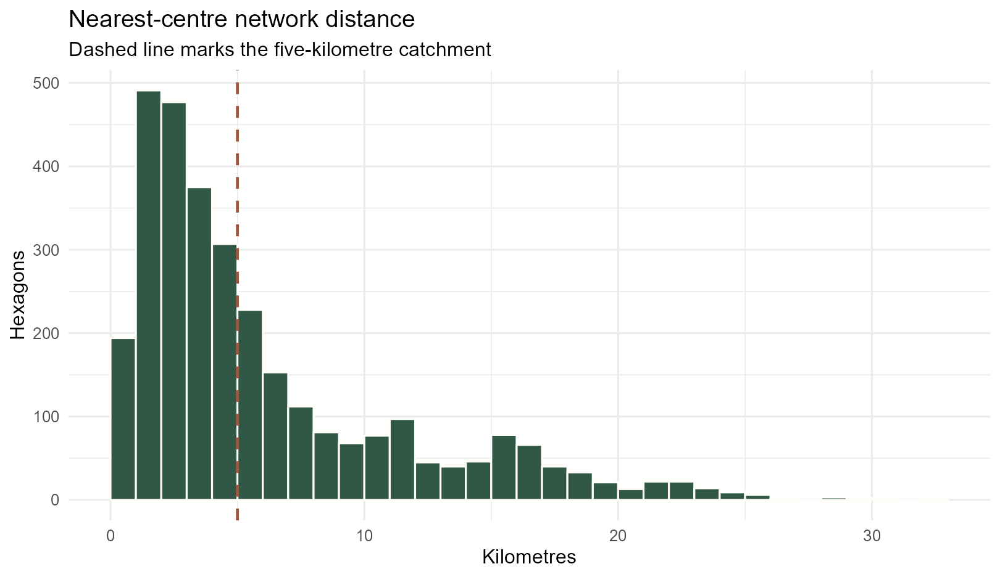
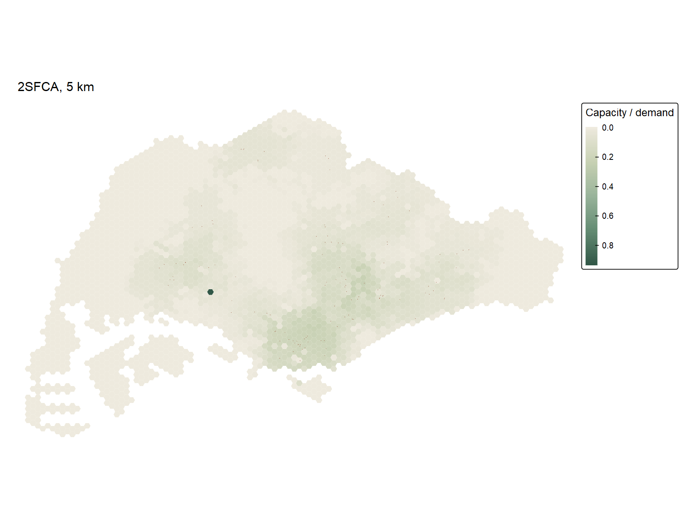
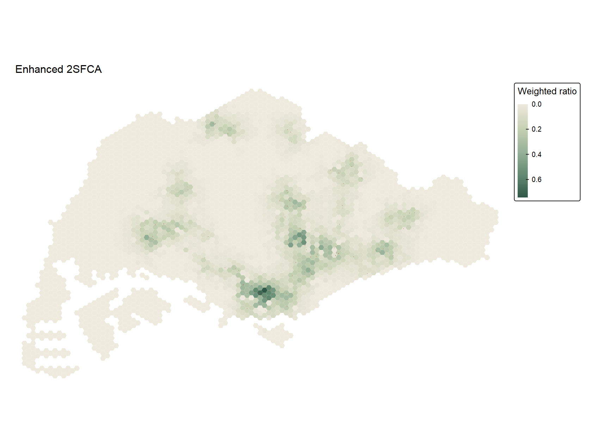
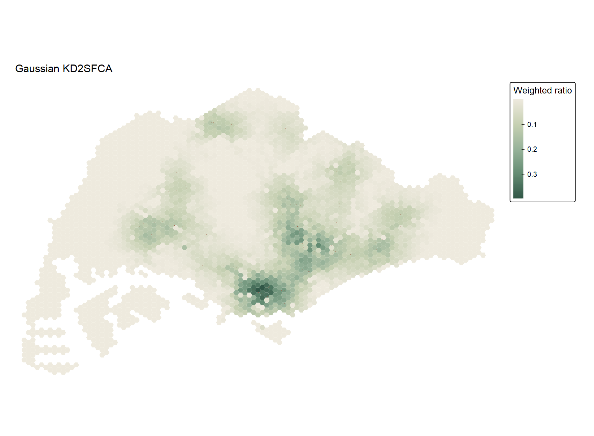
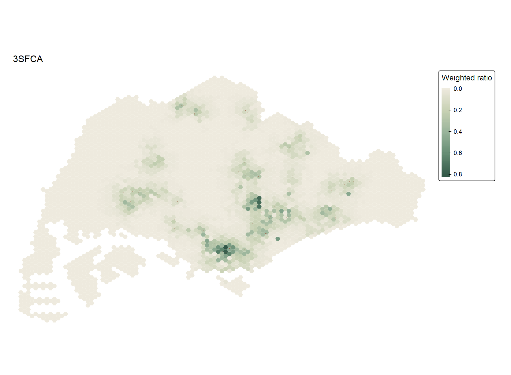
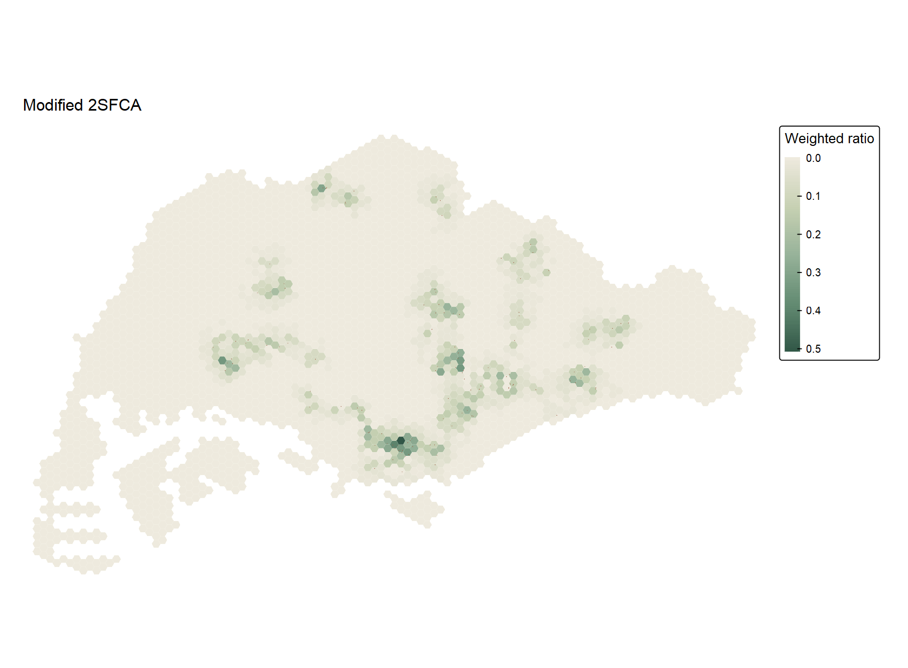
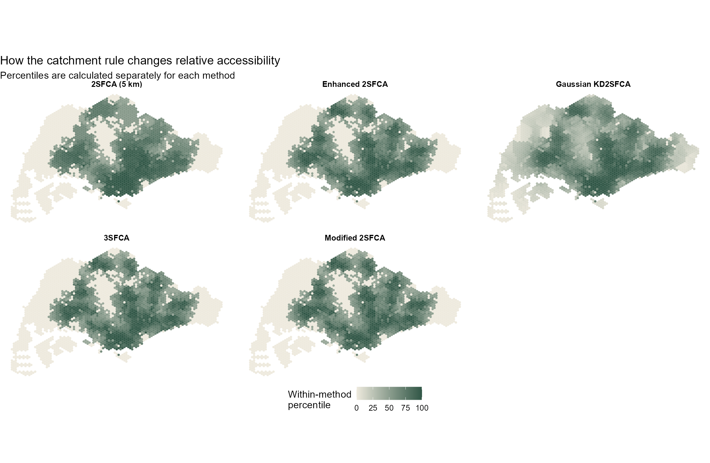
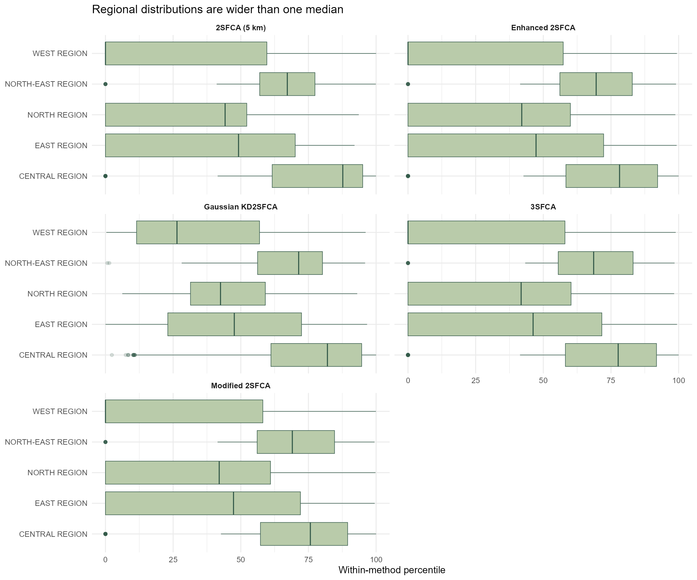

| Check | Result |
|---|---|
| Subzones | 323 |
| Hexagon origins | 3125 |
| Eldercare destinations | 120 |
| OD pairs | 375000 |
| Invalid subzones repaired | 9 |
| Missing or duplicate OD pairs | 0 |
| Unassigned planning regions | 17 |
| Distance unit | network kilometres |
| Demand / capacity assumption | 100 per origin / 100 per centre |
| Catchment limit | 5 km (four bounded methods) |
| Gaussian scale | 2 km (no hard cutoff) |
In-class Exercise 7: Geography of eldercare accessibility
Nearest-centre distance and floating catchment measures in Singapore
1 Question and materials
The In-class Exercise 7 slides move from the nearest eldercare centre to five floating catchment area measures. I use their sequence and parameters to ask where accessibility is relatively high, and whether the answer changes when I introduce distance weights and competition for capacity. This page builds on Hands-on Exercise 7, but it is a separate in-class analysis with its own complete RStudio script.
I reused the ZIP supplied for Hands-on Exercise 7. It contains Master Plan 2014 subzones, 3,125 hexagon origins, 120 eldercare destinations and a 375,000-row network origin–destination (OD) table. As in class, every hexagon is assigned demand 100 and every centre capacity 100. These are teaching assumptions, not observed populations or licensed places. The raw, course-prepared archive remains local; reproduction notes and the input manifest document it without republishing the data.
The shared preparation script checks that the OD matrix is complete and ordered correctly, repairs nine invalid subzone geometries, and records the metre-grid CRS as EPSG:3414. I convert network cost from metres to kilometres only after validating the OD pairs. A matrix with the correct dimensions but mismatched row IDs would produce plausible-looking, wrong maps.
2 Distance to the nearest centre
The slide’s cost_to_closest() example passes hexagon demand as land_use_data. I changed that argument to the eldercare table: the OD destinations are centres, so the opportunity column must describe centres. The resulting distance agrees exactly with the row minimum of the independent OD matrix check.
Show R code
travel <- od |>
dplyr::transmute(from_id = origin_id,
to_id = destination_id,
dist = total_cost)
centres <- eldercare |>
sf::st_drop_geometry() |>
dplyr::transmute(id = fid, capacity = 100)
nearest <- accessibility::cost_to_closest(
travel_matrix = travel,
land_use_data = centres,
opportunity = "capacity",
travel_cost = "dist",
n = 1
)
The median nearest-centre distance is 4.06 km and the longest is 32.5 km. The Central Region median is 2.21 km, compared with 7.66 km in the West. The histogram shows why five kilometres is consequential rather than a neutral default.

3 Preparing the OD cost matrix
catchment::catchment_ratio() expects one distance for every origin–destination pair. The supplied costs are metres; the model distances are kilometres. I pivot the long OD table, then align its rows and columns to the fid order in the hexagon and centre layers. The analysis script checks both ID vectors before using the matrix.
Show R code
wide <- od |>
dplyr::select(origin_id, destination_id, total_cost) |>
tidyr::pivot_wider(names_from = destination_id,
values_from = total_cost)
wide <- wide[match(hexagons$fid, wide$origin_id), ]
distance_km <- as.matrix(wide[, as.character(eldercare$fid)]) / 1000
stopifnot(identical(dim(distance_km), c(3125L, 120L)))4 Two-step floating catchment area (2SFCA)
The first ratio uses a five-kilometre limit. In the first step, each centre’s assumed capacity is related to demand in its catchment. In the second, an origin accumulates ratios for centres it can reach. This adds competition for the same assumed supply; it is not simply a count of nearby centres.
Show R code
two_sfca <- catchment::catchment_ratio(
consumers = rep(100, nrow(hexagons)),
providers = rep(100, nrow(eldercare)),
cost = distance_km,
max_cost = 5
)
1,281 origins have no centre inside the five-kilometre network catchment and receive zero. The ratio’s median is 0.0207. I use a continuous legend rather than the slides’ ten quantile classes: the large mass of tied zeros makes quantile cut-points repeat and can produce misleading labels.
5 Enhanced 2SFCA: stepped distance decay
Enhanced 2SFCA keeps the five-kilometre outer boundary but assigns lower weights to more distant pairs. I use the slide’s weights: 1 through the first kilometre, 0.4 to two kilometres, 0.1 to three, 0.05 to four and 0.01 to five.
Show R code
step_weights <- list(c(5, .01), c(4, .05), c(3, .1),
c(2, .4), c(1, 1))
enhanced <- catchment::catchment_ratio(
consumers = demand, providers = capacity,
cost = distance_km, weight = step_weights
)
The median falls to 0.0038, but changing the weights does not remove the 1,281 no-centre origins. This is a change in the model’s allocation of opportunity inside the boundary, not a discovery of new service capacity.
6 Gaussian kernel-density 2SFCA
The Gaussian version replaces steps with a smooth decline in influence. I state scale = 2 explicitly so its kilometre interpretation is reproducible. Unlike the four bounded variants here, this call has no hard maximum distance. Every origin gets a mathematically positive value, even when that value is negligible.
Show R code
gaussian <- catchment::catchment_ratio(
consumers = demand, providers = capacity,
cost = distance_km, weight = "gaussian", scale = 2
)
The smallest score is 2.4e-57. Calling that non-zero value meaningful coverage would be misleading. The Gaussian map is smoother at catchment edges, but it still relies on the same synthetic demand and capacity inputs.
7 Three-step floating catchment area (3SFCA)
The 3SFCA call uses the stepped weights and normalises each origin’s weights across reachable providers. This models a choice or competition adjustment when more than one centre is within range. The five-kilometre outer boundary remains.
Show R code
three_sfca <- catchment::catchment_ratio(
consumers = demand, providers = capacity,
cost = distance_km, weight = step_weights,
normalize_weight = TRUE
)
8 Modified 2SFCA
Finally, the modified 2SFCA squares the provider-side distance weights, following the slide. This makes proximity matter more strongly on that side of the ratio. It has a median score of 4.46^{-5}, but its raw values should not be read against 2SFCA or 3SFCA as if the scales were identical.
Show R code
modified <- catchment::catchment_ratio(
consumers = demand, providers = capacity,
cost = distance_km, weight = step_weights,
adjust_providers = function(w) w^2
)
9 Comparing the results
| Measure | Minimum | Median | 90th percentile | Maximum | Zeros |
|---|---|---|---|---|---|
| Nearest centre (km) | 0.0369 | 4.0640 | 15.3862 | 32.4501 | 0 |
| 2SFCA (5 km) | 0.0000 | 0.0207 | 0.1070 | 0.9314 | 1281 |
| Enhanced 2SFCA | 0.0000 | 0.0038 | 0.1240 | 0.7445 | 1281 |
| Gaussian KD2SFCA | 0.0000 | 0.0106 | 0.1133 | 0.3977 | 0 |
| 3SFCA | 0.0000 | 0.0053 | 0.1192 | 0.8188 | 1281 |
| Modified 2SFCA | 0.0000 | 0.0000 | 0.0340 | 0.5064 | 1281 |

The percentiles compare where each method ranks origins higher, not the numerical units of the scores. Enhanced 2SFCA and 3SFCA have a Spearman rank correlation of 0.995, yet their medians differ. The broad pattern is stable, but the calculations are not interchangeable. The Gaussian variant has no exact zeros; the other four all have 1281 because they retain the five-kilometre limit.

| Region | Hexagons | Median nearest km | Zero 2SFCA | Median 2SFCA |
|---|---|---|---|---|
| CENTRAL REGION | 596 | 2.211 | 52 | 0.097 |
| NORTH-EAST REGION | 317 | 2.438 | 13 | 0.046 |
| EAST REGION | 498 | 4.320 | 207 | 0.020 |
| NORTH REGION | 631 | 4.811 | 293 | 0.009 |
| WEST REGION | 1066 | 7.663 | 701 | 0.000 |
Regional summaries are descriptive. For example, the West contains 701 zero-score origins under the five-kilometre rule, but there is also considerable variation within regions. Seventeen hexagon representative points fall outside the supplied subzone-region polygons. I retain them on every map and exclude them only from the regional table.
10 What I learned
This exercise clarified why nearest-centre distance and catchment ratios answer different questions. The first measures the network cost of reaching one destination. The ratio methods add a model of how limited capacity is shared among potential demand locations. The strongest practical lesson was to inspect the OD IDs before calling a function: using hexagon demand as the destination opportunity can return a number while answering the wrong question.
I also saw how much an edge rule matters. Four methods classify the same 1,281 origins as outside the five-kilometre catchment; Gaussian weighting assigns them tiny positive values instead. The large difference between zero and almost zero on a map is mostly a modelling choice here. Before interpreting these results as service adequacy, I would need the spatial distribution of older residents, actual centre capacities, eligibility, travel modes and travel times. Nothing in these maps establishes a causal effect of centre location on access or wellbeing.
11 Sources and files
- In-class Exercise 7 slides: Geography of Accessibility: catchment methods, accessed 17 October 2026.
catchment::catchment_ratio()reference and package introduction, accessed 17 October 2026.accessibility::cost_to_closest()reference, accessed 17 October 2026.- User-supplied
Hands-on Exercise 7.zip, received 17 October 2026. The archive does not identify a separate source date or publisher for every prepared layer. See the input manifest, method audit and session details. - Full RStudio analysis script · Reproduction notes · Download a PNG map.